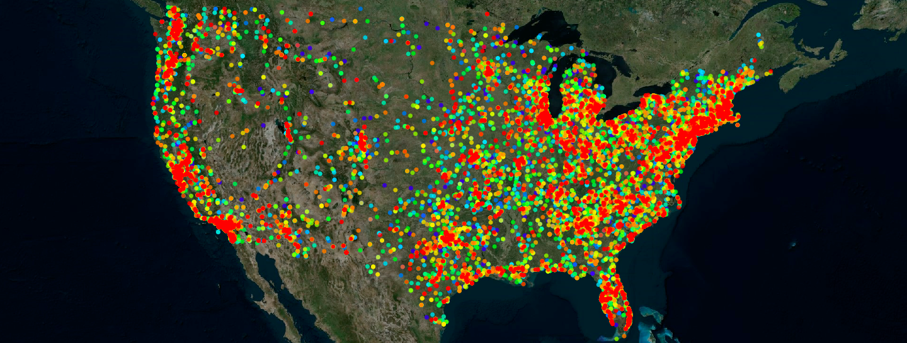

Project 2: Text, Network, and Geospatial
visualization
- Project screenshot (a 1200 x 600 gif image of your visualization which
should be named p1.<your_last_name1><your_last_name2><your_last_name3>.gif), demo link,
and github link are due at 11:59pm Wednesday, April 10th to the nhat.le@ttu.edu
. Nhat will make an html table with your group projects.
- You can update your source code and project report uptill 3:29pm
Thursday, April 11th.
- This project is 30% of your final grade:
- 20% for design and implementation.
- 5% for in-class presentation.
- 5% for project report on Github.
- Each student needs to send a peer evaluation for other teammates by 11:59pm Friday, April 12th to the nhat.le@ttu.edu . This peer evaluation is
significant to your individual project grade. One team member can get A but another can get D or Fail. The
peer evaluation contains:
- Teammate name.
- Rating from 0 to 5 (5 is best).
- Less than 3-sentence review.

Project Description:
- Project 2 is a group (2 or 3 students) project. A leader is also selected by the
instructor.
Example Project:
- In this project, students will work on the texts extracted from news/blogs and
classified into 4 categories: people names, locations, organizations, and miscellaneous. Each entry also
contains the published time/date of the article/blog.
- Students are provided 2 datasets: The Wikinews data (roughly 3.3M) contains 11,267 articles and the Huffington Post data (roughly 29.4M)
contains 75,293 political blogs. Students are required to demonstrate their web applications on both
datasets.
For a C, you need to visualize terms:
- Show the top 50 popular terms (all categories) in Worldle/Tag Cloud
- Show the monthly frequency of the 50 popular terms over time
- Select a term and highlight its monthly frequency
- Allow users to quickly zoom into a time interval for more details (daily frequencies)
For a B, you need to visualize relationships:
- Input a term and display the top 50 related terms (terms appear in the same blog)
- Show relationships between terms
- Mousing over a term highlight related terms (within the 50 terms)
For a A, you need to make discoveries:
- Plot locations mentioned in news/blogs on a map.
- Your ideas on making visualizations for highlighting patterns within the data
- Automatically highlight importants events.
- Compare topics from 2 sources?
- Tell your stories.
Data:
By 11:59pm Friday 3/8, you will need to send the nhat.le@ttu.edu (and cc the instructor)
The dataset must satisfy the requirement:
Can not be too simple
Can have more than 1 elements of Text, Network, and Geospatial.
Example data:
UFO reports: http://www.nuforc.org/
Transcripts of the six seasons of Futurama episodes: http://theinfosphere.org/Episode_Transcript_Listing
Air quality around the US https://aqs.epa.gov/aqsweb/airdata/download_files.html
Notes:
This project is a web-based application in javascript, html, and D3 (you can use other javascript libraries).
Your code should run on all browsers (Chrome, Safari, Firefox, Explorer,...). No refreshing: Every
refresh costs you 1%.
Your application should start out showing some data or an overview and then allow users to add more or request
details on demand. Do not start with an empty screen and do not overwhelm viewers by showing a lot of the data
right away.
Do not write the application at the last minute to avoid mistakes. Make sure that your code runs and that you
have enough time to design intuitive interfaces.
Make sure your code is well commented (this is a good practice since you will work in a team). Instructor may
inspect your source code.
Project report on Github (readme file):
Create a 3-minute video showing the use of your application with your voice over. That video should appear on
the top of your github readme file.
The video is a good way to show your interactive application in a short amount of time. If you submit a paper to
a visualization conference, a video is very useful. It can be also a backup during your presentation just in
case of something go wrong.
Add a link to your web-based application (right after the video). You can host it on your github or your ttu personal page.
Clearly explain the duties of each student in your group.
Discrible your application and highlight your findings by screenshots.
In-class presentation:
The presentation is 10 minutes per group (everyone needs to present). It is 8 minute talk and 2 minute for
questions. Make sure that you are ready to talk right after the group in front of you is done.
Please practice your talk. Show the basic functionality and emphasize on why your visualization is different.
Group Assigned
| Team |
Members |
Abstract |
Screenshot |
Team Photo |
Dataset |
Presented Date |
Evaluation link |
Result |
© Last revised: March 5, 2019